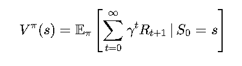

Getting Hands-On with Policy Evaluation and Policy Iteration
Alright, now that we’ve laid the groundwork for Markov Decision Processes (MDPs), it’s time to roll up our sleeves and get into the action! We’ll dive into Policy Evaluation and Policy Iteration—two key components that help us refine decision-making strategies in MDPs. By the end of this section, you’ll not only understand these concepts but also see them in action in the Cliff Walking Environment. So, grab a coffee (or your favorite beverage) and let’s break it down!
Policy Evaluation: Understanding the Worth of a Policy
Let’s say you’re playing a board game where you earn points based on the moves you make. You want to know: if you follow a particular strategy, how much reward can you expect to accumulate over time? That’s precisely what Policy Evaluation does—it helps compute the value function for a given policy.
Mathematically, we express the value function for a policy as:

Where:
- γ is the discount factor, controlling how much we care about future rewards.
- Rt+1 is the reward at time t+1.
Policy Iteration: Making Better Decisions Over Time
Now that we know how to evaluate a policy, the next logical step is to improve it! Policy Iteration does exactly that: it alternates between Policy Evaluation (measuring the value of a policy) and Policy Improvement (updating the policy to make better decisions).
Algorithm: Policy Iteration
Applying Policy Iteration in the Cliff Walking Environment
Now, let’s put these concepts to the test in the Cliff Walking Environment—a classic reinforcement learning problem. Picture a grid where you must navigate from Start to Goal without falling off a cliff (which incurs a heavy penalty).
- States: Each grid position.
- Actions: Move left, right, up, or down.
- Rewards: -1 for each step, -100 for falling off the cliff, and 0 at the goal.
- Goal: Find the optimal policy that reaches the goal with minimal penalties.
Using Policy Iteration, we:
- Initialize a random policy (e.g., moving randomly or always moving right).
- Evaluate the policy to compute the value function.
- Improve the policy by choosing actions that minimize the risk of falling off while reaching the goal efficiently.
- Repeat until we find the optimal policy.
Implementation: Policy Iteration
import numpy as np
def policy_iteration(P, R, gamma=0.9, theta=1e-6):
n_states, n_actions = R.shape
policy = np.zeros(n_states, dtype=int)
V = np.zeros(n_states)
while True:
# Policy Evaluation
while True:
delta = 0
for s in range(n_states):
v = V[s]
a = policy[s]
V[s] = sum([P[s, a, s_prime] * (R[s, a] + gamma * V[s_prime]) for s_prime in range(n_states)])
delta = max(delta, abs(v - V[s]))
if delta < theta:
break
# Policy Improvement
policy_stable = True
for s in range(n_states):
old_action = policy[s]
policy[s] = np.argmax([sum([P[s, a, s_prime] * (R[s, a] + gamma * V[s_prime]) for s_prime in range(n_states)]) for a in range(n_actions)])
if old_action != policy[s]:
policy_stable = False
if policy_stable:
break
return policy, V
Wrapping Up
We’ve taken a deep dive into Policy Evaluation and Policy Iteration, seeing how they help refine decision-making in MDPs. Whether it’s choosing the best route as a delivery driver, improving Netflix recommendations, or avoiding the dreaded cliffs in reinforcement learning, these concepts have real-world significance.
In the next section, we’ll push further into Value Iteration, another powerful way to solve MDPs efficiently. Ready to see how we can find the best policies even faster? Stay tuned! 🚀